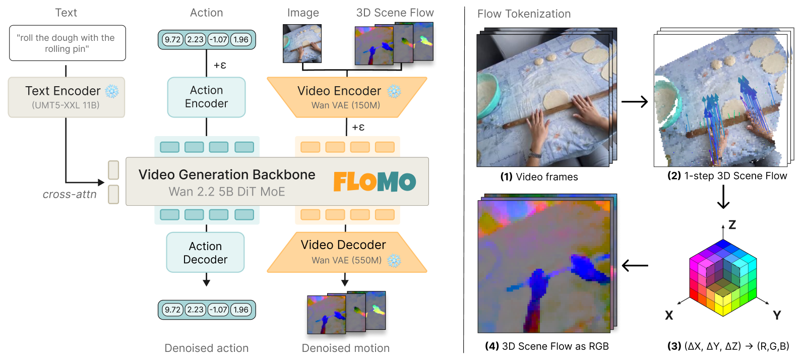
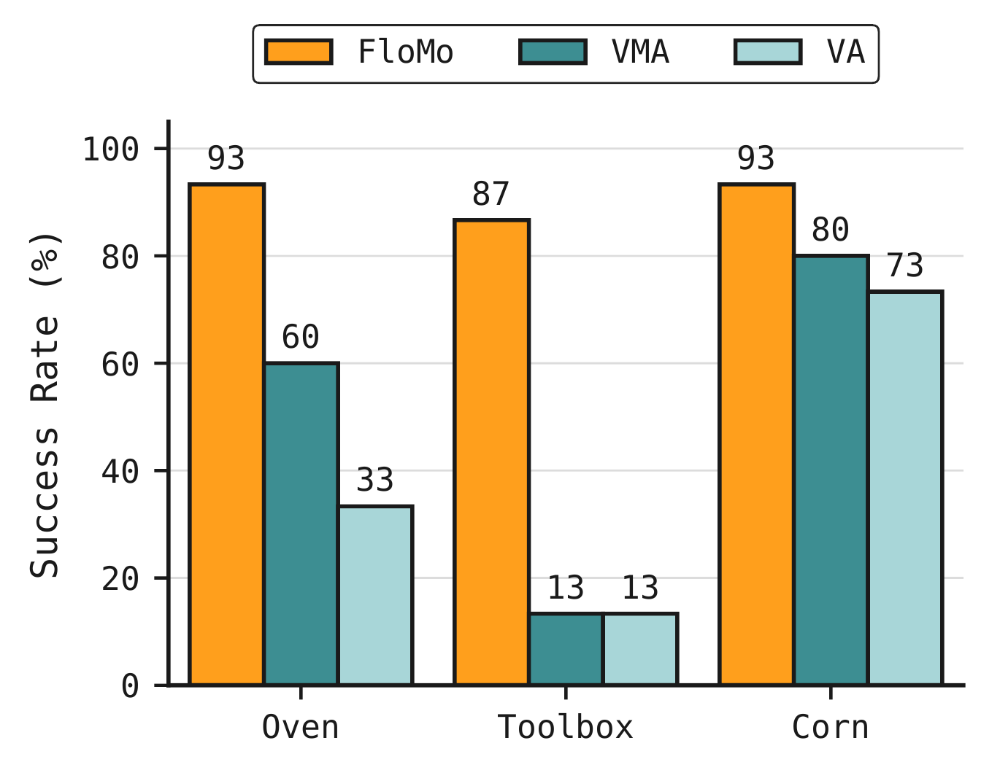
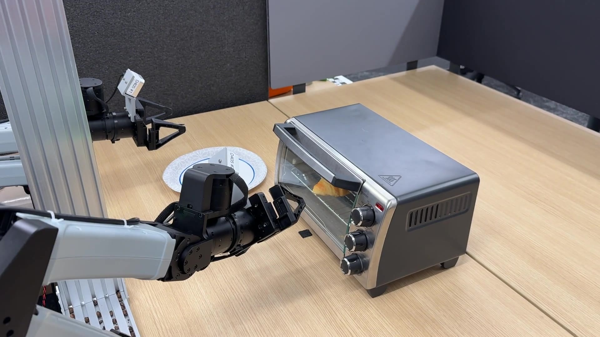
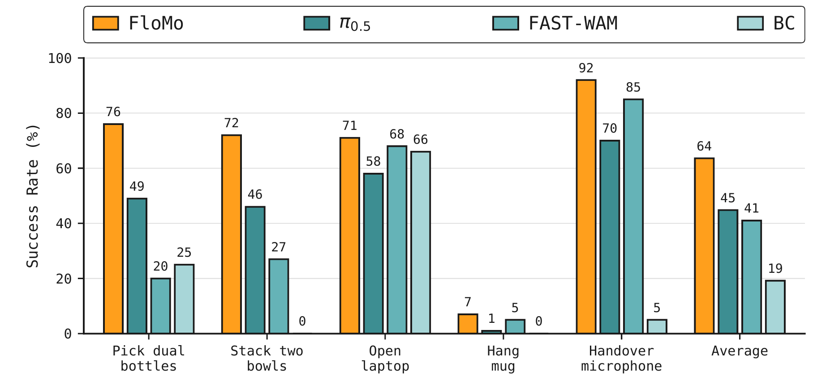

3D Scene Flow as a World Action Model Intermediate for Learning from Human Video
World action models typically predict RGB video. We argue the right target is instead 3D motion. FloMo renders 3D scene flow into the latent space of a pretrained video generation model and fine-tunes a single backbone to predict motion and action. Predicting motion instead of pixels gives better in-distribution success, far stronger out-of-distribution generalization, higher sample efficiency, and the best success on every RoboTwin simulation task we evaluate.
Architecture
Motion mediates transfer from video to action

Motion tokenization
3D motion in the video latent space
Scene flow keeps task motion and discards the appearance details that do not determine action.
The action that produces a future state depends on how the scene moves, not how it looks. 2D optical flow captures motion but conflates camera ego-motion with task-relevant motion, so FloMo predicts 3D scene flow in a canonical frame: the cumulative 3D displacement of each tracked point, expressed in the first frame's camera.
We render this as an RGB video and encode it with the frozen Wan 2.2 VAE. Rendered flow lands in the same latent space as video, so the pretrained DiT handles it with no new tokenizer. We fine-tune only the backbone (LoRA, rank 64).
Pixels vs. motion
RGB observation · 2D tracks · 3D scene flow
RGB observation · 2D tracks · 3D scene flow.
RGB observation · 2D tracks · 3D scene flow.
RGB observation · 2D tracks · 3D scene flow.
RGB observation · 2D tracks · 3D scene flow.
Method
Two-stage co-training
FloMo is co-trained on a mixture of egocentric human video and bimanual robot teleoperation.
Mid-training
Train on the full mixture. Human video supervises scene flow only; robot data supervises scene flow and action. This builds a broad motion prior at scale.
Fine-tuning
Train on robot video/action data only, dropping human video. This sharpens action prediction without diluting the gradient with action-free samples.
At inference, from an image and a language instruction, FloMo denoises for 10 flow-matching steps, then executes a chunk of 16 actions before re-planning.
Contributions
What we show
Motion prediction as RGB video prediction
We render 3D scene flow as RGB and encode it with the frozen video VAE, so motion shares the video latent space. A single backbone flow-matches motion and action with no new tokenizer.
Motion is the most effective target
On real-robot manipulation, predicting motion gives higher in-distribution success and out-of-distribution generalization than predicting video; adding video prediction interferes with action learning. FloMo also leads every task on the RoboTwin simulation benchmark.
Generalization from human video
FloMo transfers to objects, motion primitives, and tasks seen only in action-free human video and never present in robot training.
Results
Predicting motion beats predicting pixels
In-distribution success
Three contact-rich bimanual tasks (Oven, Toolbox, Corn), 15 real-robot rollouts per task. The VMA (video + motion + action) and VA (video + action) variants share FloMo's architecture and training protocol and differ only in prediction target.

FloMo wins every task, averaging 91% against 51% for VMA and 40% for VA. Adding video prediction to the motion–action objective costs 40 points; replacing motion with video costs 51. The gap is largest on Toolbox (87% vs. 13% for both video variants), where opening the lid requires locating a narrow crevice and executing precise, contact-rich motion.
In-distribution rollouts
FloMo successes on the same three in-distribution evaluation tasks.

Open the oven, retrieve the croissant, place it on a plate.
Open the hinged lid, grasp the screwdriver, place it inside.
Grasp the corn cob and place it in the bowl.
Out-of-distribution generalization
FloMo is the only method that generalizes consistently across all three OOD axes: an unseen primitive (Close Cabinet), task (Pull String), and object (Highlighter). Every method that predicts pixels, through video or image-space 2D tracks, degrades sharply.
| Method | Close Cabinet | Pull String | Highlighter | Aggregate | ||||
|---|---|---|---|---|---|---|---|---|
| SR ↑ | TP ↑ | SR ↑ | TP ↑ | SR ↑ | TP ↑ | SR ↑ | TP ↑ | |
| VMA (video + motion) | 0/10 | 0 | 0/10 | 0 | 2/10 | 45 | 2/30 | 15 |
| VA (video) | 0/10 | 20 | 1/10 | 10 | 1/10 | 15 | 2/30 | 15 |
| DreamZero | 5/10 | 75 | 1/10 | 15 | 0/10 | 0 | 6/30 | 30 |
| AMPLIFY | 6/10 | 70 | 0/10 | 0 | 0/10 | 0 | 6/30 | 23 |
| FloMo (ours) | 6/10 | 70 | 7/10 | 70 | 5/10 | 65 | 18/30 | 68 |
10 rollouts per condition (30 total) · SR = successful rollouts / total · TP = avg. fraction of task stages completed (%). FloMo averages 60% success and 68% task progress, vs. 20% SR for AMPLIFY and DreamZero and 7% for VMA and VA.
Out-of-distribution rollouts
FloMo successes across the unseen primitive, task, and object evaluations.
Out-of-distribution rollouts
Push the cabinet door shut.
Pull the string on the toy in the air.
Place the unseen highlighter in the bowl.
Simulation: RoboTwin benchmark
Single-task adaptation on five RoboTwin tasks spanning bimanual grasping, sequential placement, articulated objects, precision placement, and bimanual transfer. Each policy is trained on the 50 official demonstrations (5,000 gradient steps, batch size 256) and evaluated on 100 Easy-setting episodes per task and method.

FloMo averages 63.6% success against 44.8% for the pretrained VLA π0.5, 41.0% for the video-predicting world action model FAST-WAM (same rank-64 Wan-backbone LoRA as FloMo), and 19.2% for a 20M-parameter diffusion-policy BC baseline without video pretraining.
| Method | Pick Dual Bottles | Stack Two Bowls | Open Laptop | Hang Mug | Handover Mic | Average |
|---|---|---|---|---|---|---|
| BC (Diffusion Policy) | 25 | 0 | 66 | 0 | 5 | 19.2 |
| FAST-WAM | 20 | 27 | 68 | 5 | 85 | 41.0 |
| π0.5 | 49 | 46 | 58 | 1 | 70 | 44.8 |
| FloMo (ours) | 76 | 72 | 71 | 7 | 92 | 63.6 |
Success rate (%) over 100 RoboTwin Easy episodes per task and method.
Why motion works
The action signal is both easier to learn and easier to find
Two controlled probes point to the same conclusion: motion is a more direct bridge from observation to action than pixels.
with only 1% of the data

to motion than video

Generalization from human video
Scene flow transfers from human video
3D scene flow is embodiment-agnostic: a human hand and a robot gripper produce a similar motion field. FloMo learns motions from action-free human video and carries them to the robot.
Same model, same motion target. Removing only the human video drops average OOD success by 53 points.
| Training data | Close Cabinet | Pull String | Highlighter | Average | ||||
|---|---|---|---|---|---|---|---|---|
| SR | TP | SR | TP | SR | TP | SR | TP | |
| FloMo | 6/10 | 70 | 7/10 | 70 | 5/10 | 65 | 18/30 | 68 |
| FloMo (no human video) | 0/5 | 20 | 1/5 | 50 | 0/5 | 20 | 1/15 | 30 |
Both models predict 3D motion and differ only in whether the ~81 h EgoVerse subset and 0.7 h of internal action-free human demonstrations are in training. FloMo uses 10 rollouts per condition; the no-human-video ablation uses 5. SR = successful rollouts / total; TP = avg. fraction of task stages completed (%).
Same model, same motion target. Removing only the human video drops average OOD success from 60% to 7%. Without it, the model can begin each task but rarely completes the novel motion: it contacts the cabinet on 2 of 5 trials but never closes it, and grasps the string on 4 of 5 but pulls it on only one. The robot data contains no cabinets, strings, or markers, while the human video covers all three motion classes. The generalization comes from human video, made transferable by the motion representation.
Side by side
Pull String (OOD): FloMo vs. baselines
FloMo succeeds on 7/10 Pull String rollouts; no baseline exceeds 1/10. Prompt: Pull the string on the toy in the air.
Code
Code & resources
Source released upon acceptance.